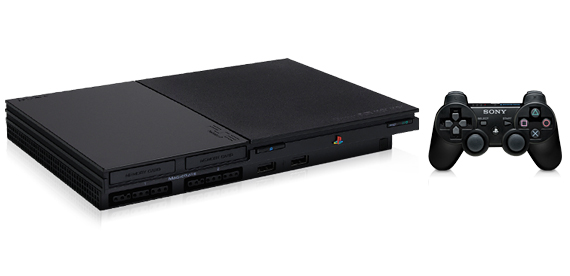

Dreamcast es la séptima y última videoconsola de sobremesa producida por Sega, fue desarrollada en cooperación con Hitachi y Microsoft. La Dreamcast es la sucesora de la Sega Saturn y fue lanzada al mercado para ganar terreno a la Playstation de Sony y la Nintendo 64 de Nintendo, y competir con los sistemas sucesores a estos.
XBOX
Xbox fue la primera videoconsola de sobremesa producida por Microsoft, en colaboración con Intel y Nvidia. La Xbox fue desarrollada para competir contra la PlayStation 2 de Sony y la Gamecube de Nintendo como parte de las videoconsolas de sexta generación. A pesar que la Xbox fue lanzada un poco después que sus rivales, tuvo buenas ventas, quedándose incluso sin unidades en las tiendas. Su juego mas destacado fue Halo.
Play Station 2

PlayStation 2 es la segunda videoconsola de sobremesa producida por Sony Computer Entertainment. La PlayStation 2 es la sucesora de la PlayStation, y compitió contra la Dreamcast de Sega, la Nintendo Gamecube de Nintendo y la Xbox de Microsoft. Actualmente sigue activa con un importante número de usuarios, compitiendo con las consolas de la séptima generación, siendo la única consola que ha logrado tener un ciclo de vida tan largo que compite con la generación posterior a la suya.
Agunos de sus juegos mas destacados fueron God of War y Grand Thef Auto San Andreas.
Nintendo Gamecube
Nintendo GameCube es una consola de sexta generación fabricada por Nintendo. La consola fue lanzada el 14 de septiembre de 2001 en Japón, el 18 de noviembre de 2001 en Norteamérica, el 3 de mayo de 2002 en Europa y el 17 de mayo de 2002 en Australia. Según las cifras oficiales, la GameCube logró vender 21,74 millones de unidades mundialmente.
Agunos de sus juegos mas destacados fueron Super Smash Bros y Resident Evil 4.